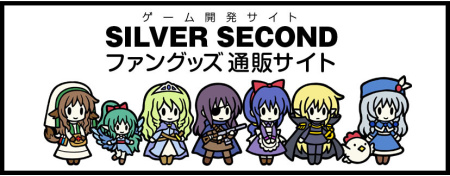
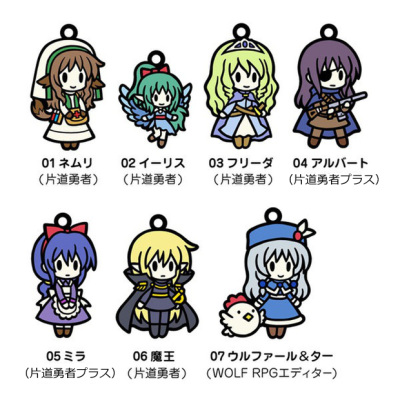

シルバーセカンド開発日誌
2016年07月
■
2016-07-31 (日) 片道勇者ｵﾝﾗｲﾝ完結!+ｳﾃﾞｨｺﾝ▼【片道勇者オンライン、最終イベント公開！】

ということで、片道勇者TRPGの販促イベントとして行われていた
『片道勇者オンライン(ｱｰｶｲﾌﾞ)』ですが、7/25に最終イベントが公開され、
一旦の終了を迎えました！
運営の方も関係者の方も本当にお疲れ様でした！
なお診断自体はそのまま残っているので、続けて遊ぶことも、
最初からやり始めることも可能です。やり損ねた人も安心！
そして『片道勇者オンライン』の見本プレイとして行っていた、
皆さまおなじみの傭兵アルバートによる冒険も7/30をもってついに完結しました！
様々な出会いと別れ、戦いと安らぎの冒険記をツイッターログのまとめとして
公開しておりますので、よければぜひどうぞ！
『アルバート片道冒険記』
これまで単体では語られなかったアルバートの冒険ですが、
普段はこんな感じで異世界渡りをしています、
というのが分かるお話になっています。
せっかく40日以上に渡って書いたので、余裕があればいずれ、
うちのサイトのテキストコンテンツとして読みやすく再編集して
載せておこうかなと考えています。
【第八回ウディコン 審査開始！】
そしてこちらも本題！ 7/30までエントリー受付していたウディコンですが、
いよいよ本日7/31から皆さまによる審査が開始となります！
【ウディコン公式ページ】(新ｳｨﾝﾄﾞｳ)
作品数は全部でなんと68作品！
今年はいつになくクオリティの密度がかなり高く、他の大きいコンテストに
出したほうが良かったんじゃ……と主観で感じる作品も多かったです。
審査の締め切りは8/23の23:59まで！
皆さまの審査、お待ちしております！
【Steamセール中！】
毎月セールしてるので4記事に一回はSteamセールです！
8/6 頃までSteamで片道勇者のセールやってます！
クリックで 『片道勇者 ＆ 片道勇者プラス』 セット購入ページへ（新ｳｨﾝﾄﾞｳ）
『片道勇者 ＆ 片道勇者プラス』 のセットパックが、今ならなんと
￥1,000→ ￥312 (69％OFF) です！
Steamで遊ぶと何がいいって、クラウドセーブされるので
ゲームを消したり他のPCで遊んだりするときも続きから遊べることです！
（ただし保存されるのは「システムセーブデータ」だけですのでご注意ください。
冒険途中で記録した個別のセーブデータは保存されません）
『片道勇者TRPG』の原作を見てみたい人も、よければこの機会にぜひ。 ■
2016-07-23 (土) 第8回ウディコン！▼【第8回ウディコン、いよいよ開催！】
ということで、明日7/24の0時よりいよいよウディコンの作品公開が始まります！
募集自体はデータ破損などを避ける都合上、7/23の夜頃から開始します。
【WOLF RPGエディターコンテスト公式サイト】(新ｳｨﾝﾄﾞｳ)
そろそろ他コンテストも増えてきたので、応募規模も縮小して
少しは楽になるんじゃないかなーと期待しつつあるんですが、
今年は果たしてどうなるでしょうか。今となっては、運営は私一人ですからね。
ちなみに、来年2017年の第9回ウディコンもすでに開催が決定しておりますので、
「今年が最後だったら出さなきゃ！」とお考えになる必要はございません。
いいアイデアのゲームはぜひじっくり熟成させてください。
作っている間に、もっと大きなコンテストに出せる作品に育つかもしれませんしね。
【片道勇者オンライン 終了間際！】
先月１４日に始まったツイッターゲーム『片道勇者オンライン』ですが、
いよいよ7/25に最終イベント公開予定とのことです！
【片道勇者オンライン公式サイト】(ｱｰｶｲﾌﾞ)
薬師ネムリがクモにされかけたり大陸一個分のサイズの超巨大迷宮が
発見されたりと色々ありましたが、いよいよクライマックス！
これまで遊んでくださっている皆さま、よければ最後まで
お付き合いいただければ幸いです。
なお、私はおなじみのキャラクター、「アルバート」を使用して
片道勇者オンラインの見本プレイを行っております。
よければこちらもぜひご覧ください。意外と波乱万丈の冒険でした。
【アルバート片道冒険記（プレイまとめ）】
自分で作っておきながらツイッターゲームを遊ぶのは実は初めてだったんですが、
演出を書いたりキャラクターを表現したりする遊び方をするならば
まさにTRPGの訓練にすごく向いてるなあ、という印象でした。
＜元々、片道勇者オンラインは『片道勇者TRPG』のPRゲームでした＞
ものすごく原作の再現性が高くてシステムも美しく再構築された『片道勇者TRPG』も
絶賛発売中ですので、よければこの夏にぜひどうぞ！
私が剣士のお姫さまキャラになったりしているリプレイも半分くらい載ってます。
（たぶん）来月中には片道勇者TRPGの連載リプレイも開始予定！
お楽しみに！ ■
2016-07-16 (土) 片道勇者TRPG 7 収録▼【片道勇者TRPG その7 収録中！】
片道勇者TRPG連載リプレイ用の収録、徐々に進んでおります！
来週のウディコン募集開始までには、ある程度の収録を
済ませたいなという勢いで進行中です。
その後に、一番大変なリプレイ編集作業が待ってます！
プレイヤーキャラクター、4人のうちの2人
収録の進行状況としてはただいま7～8セッション予定中の
5セッションが終わっているところです。
<自家製>片道勇者TRPGのときみたいにいつも通り
下品なネタが飛び交うひどいセッションになってますが、
ブリッツPさんの動画と違って公式扱いはされていないので安心です！
どこまで検閲が入るか戦々恐々です。
今回は全部収録が終わってから、調整したり色々とアレコレしてもらったりして
完全に準備が整ってからようやく連載開始する予定なので、
連載が途中で頓挫したりはしないはずです！ ご安心を！
ということなので、ウディコンなども楽しんでいただきつつ、
もう少々お待ちいただければ幸いです。
【第8回ウディコン、まもなく開催！】
さて、来週からはついに第8回ウディコンの募集期間開始です！
募集開始は7/24となっております！
（が、例年通りなら集中によるデータ破損など事故を避けるために
7/23の夜頃にこっそり募集開始すると思います）
今年の応募作品も非常に楽しみです。
なお、私が生きていれば2017年にも「第9回ウディコン」を開催する予定ですので、
「すごくいいアイデアなんだけど作り込みがどう考えても足りない！」
というゲームを開発しておられる場合は来年を狙ってくださるのも手ですよ。
また、最近は他にもゲームコンテストや投稿の場が
たくさん出ていていますので、そちらもぜひご検討ください！
広い場に出られる素質がある作品ならば、
ぜひ広いところへ展開していただきたい、というのが私の願いです。
（あと、私のコンテスト運営も楽になりますしね！）
以下は気になった拍手コメントへの返信です。
皆さま、いつもコメントありがとうございます！
＞ぎゃあー！ （ストラップ）かわいい！！ キャラクターの追加うれしすぎまーす！
＞絶対に買います買わせてください！！！！ 第一弾のネムリンは、マイ財布にて
＞日々お金の出入りを見張っ……見守ってくれています♪ 引っ張ったりして .
＞結構酷使しているはずですが元気元気です。ほんとに丈夫ですよね！ .
ありがとうございます！ 機会があればぜひお気に入りのキャラをどうぞ！
来月頃には送料も320円のが選べるようになるので、気になっている方は
どれにするか考えておいていただくのもいいかもしれませんね。
小さいグッズでありながら頑丈なのは頑丈なので、安心して日用品に付けられます。
＞遅ればせながら！ 片道勇者開発記を！ 購入しました！
＞念願のフリーダ王女のお話が、読めた……（中略） .
＞読んで良かったです、本当に。王女ファンにとって .
＞救いになるお話だったなぁと思います。 .
『片道勇者開発記』のお買い上げありがとうございます！
楽しんでいただけたのでしたら幸いです。
フリーダ王女の裏側が見られる片道勇者開発記は
ただいま絶賛発売中です、興味がある方はこの機会にぜひどうぞ！
『片道勇者開発記』公式サイト

■
2016-07-08 (金) 片道勇者グッズ、予約開始！▼【メタルストラップ、予約開始！】
ついに来ました、今回は新発売のグッズのご紹介です！
片道勇者＆ウルファールのミニメタルストラップの【予約受付】を開始しました！
今回は珍しく物質的な商品で、数量には限りがございますのでご注意ください。
もうワンセット生産してもよさそうな勢いで出れば増産されると思いますが、
そうでない場合は販売終了になる可能性がございます。
予約ページはこちらです↓
【BOOTH ストラップ予約ページ】

※ご予約にはpixiv IDが必要です（前はいらなかったのにー！）
念押ししておきますが、今はあくまで 【予約】 段階となっております！
来月以降、8～9月頃に商品をお届け予定です。
製造のほうはすでに発注済みで、たぶん完了まで１ヶ月くらいかかるとのことで、
それに加えて「BOOTHさんへの倉庫に送って受理されるまでの時間」や
「注文を受け付けてから発送されるまで」のラグなどもろもろを足して、
「平均的にいけば8月中にお届けできるかな？」という雰囲気だと思います。
（不幸が重なると9月にずれこむと思います）
【メタルストラップってどんな商品？】

メタルストラップは、キャラ身長2.5cmくらいの小さい金属製ストラップです。
付けられる先としては『スマホのイヤホン穴』や、『ジッパー』や、
『ストラップ穴（イヤホンジャック部分だけヒモからはずせます）』など
割と自由度があるので、付ける先には困らない印象です。
そして何より頑丈！ もはや傷つけるのが難しいレベルなので雑に扱っても安心です。
【どんな種類があるの？】
商品は『片道勇者プラス』のアンケート等で厳正に選ばれた以下の7種類！

単価は600円、現在の送料はまとめて700円となっておりますので、
お気に入りのキャラをいくつか選んでいただくのがおすすめかもしれません
（前は1種類買うのに700円も送料かかったのでお客様が
グギャーとなっていました、申し訳ございません！）
また、送料が約半分（320円）で済む「メール便」が使えるようになるのは
実際に商品が発売されてからになるようですので、
「送料が安い方で買いたい！」という方は、発売開始まで少々お待ちください。
それまでに売り切れになるようでしたら、さすがに再生産が入ると思います。
ちなみにストラップのデザインや作成その他諸々は、
前回のネムリストラップに引き続き、
同人サークル「ギロチン銀座」様(当時のｱｰｶｲﾌﾞﾍﾟｰｼﾞへ)にお願いしています。
いつも大変お世話になっております！
ということで、欲しい方がいらっしゃいましたら、よければぜひ。
↓
【BOOTH 片道勇者ストラップ予約ページ】
https://silversecond.booth.pm/items/284665 (販売終了) ■
2016-07-02 (土) 片道勇者TRPG 6 + PayPal▼【片道勇者TRPG その6】
リプレイ連載開始までだいぶ遠そうなので、しばらくお茶濁しのターンです！
今回は片道勇者TRPG、連載セッションで登場予定のNPCをご紹介！
第一弾はこれ！

今回ご紹介するのは連載セッションにゲスト参加したNPC、
『片道勇者開発記』 より狩人レインです！
無印版の開発段階からぼんやりとした構想だけはあったのですが、
出す機会がなくて関係キャラのストーリーと共に原作から消滅したキャラです。
元はお城で召使いの仕事をしていましたが、強くなろうとするフリーダ王女を見て、
レイン自身も弓使いとしての訓練を始めたという経緯があります。
本来ならフリーダ王女と旅立つ予定だったのですが……？
彼女が何者か詳しく知ってる人はまだ世界に数百人しかいませんので
気になる人はぜひ『片道勇者開発記』（税込500円）をどうぞ！
『片道勇者開発記』 公式ページはこちらをクリック！

ゲーム版（WebMoneyかPayPalで購入可） と Kindle版（Amazonで購入可）があります。
【PayPal搭載！】
今のところは『片道勇者プラス』と『片道勇者開発記』だけですが、
PayPalお支払いに対応しました！
PayPalというのは海外の老舗（しにせ）のクレジットカード利用可能決済サービスで、
クレジットカード番号をお店で直接入れずにPayPalを経由して支払いできるため、
カード番号の漏洩などを心配せずに使えるのが魅力です。
が、いざPayPalを使ってみると、初めての人には
意外と不便なところがあったりしておすすめしにくい感じだったりしたので、
このお支払い方法は「すでにアカウントをお持ちの方向け」な印象でした。
簡単に言うと、初登録後、2回目のお買い物をするときにカードの認証プロセスが挟まって、
数日～1ヶ月近く待たねばならない場合がある、ということです（それ以降はお手軽！）。
一方でWebMoneyさんの方は、WebMoneyウォレットのアカウントを取れば
クレジットカードで1000円からチャージ（入金）できるので、
どのみちアカウントを取るのならば初めての人には一周戻って
こっちのほうがおすすめな気がします。
一番簡単で安全なのは、コンビニでWebMoneyカードを
買ってきていただくことですけれどね。
【Steamセール中！】
「おまえんちの片道勇者っていつもセールやってるよな」
と言われそうですが、7/4 か 7/5 頃までSteamで片道勇者のセールやってます！
クリックで 『片道勇者 ＆ 片道勇者プラス』 セット購入ページへ
『片道勇者 ＆ 片道勇者プラス』 のセットパックが、今ならなんと
￥1,000→ ￥312 (69％OFF) です！
これまでよりさらに安くなっておりますので、気になっていた方はぜひどうぞ。
Steamで遊ぶと何がいいって、クラウドセーブされるので
ゲームを消したり他のPCで遊んだりするときも続きから遊べることです！
（ただし保存されるのは「システムセーブデータ」だけですのでご注意ください。
冒険途中で記録した個別のセーブデータは保存されません） 2016年07月
Copyright © SmokingWOLF / Silver Second
 カテゴリ: 片道勇者
カテゴリ: 片道勇者 カテゴリ: 片道勇者
カテゴリ: 片道勇者